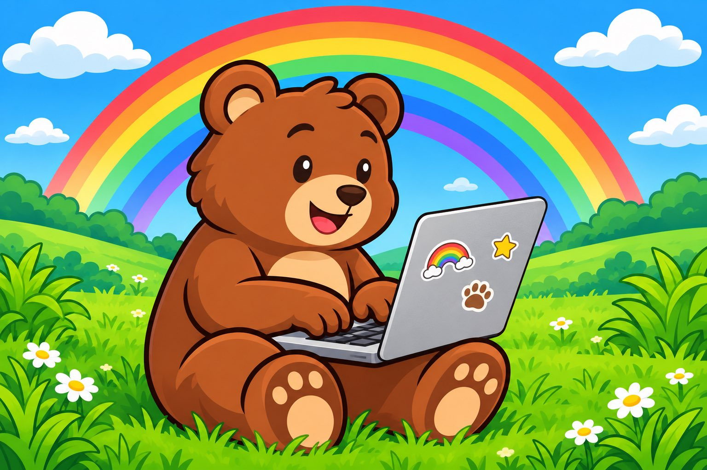

Creating a Standard Library for the Plush Language

Since the last blog post, I've been working on a variety of things to bring Plush a bit closer to what would be considered a "real" programming language. As part of that, I added a basic REPL to Plush, and I fixed a multitude of small issues, including some parser bugs. I also worked on improving error messages and error handling in general. The biggest change though is that I started to put together a standard library.
Plush has had support for modules and imports for over a year already, but until recently, the language only had support for relative imports. That quickly became limiting as you would end up needing to copy and paste dependencies that are reused between different projects. I ended up having a sort of impromptu set of shared modules that lived in the examples/ folder, with some additional libraries in the benchmarks/ directory. Still I thought, it would be nice to turn these shared modules into more of a shared library that every Plush program can use.
The thing with standard libraries though is that they should ideally have stable APIs. That implied that if I wanted to turn some of my impromptu shared modules into proper standard libraries, I needed to go over them and clean them up. I started by taking the opportunity to upgrade my random generator, moving from an LCG to a Xoshiro128++ random number generator. Plush now has a much nicer random library with an RNG base class that defines many convenience methods. The design allows you to instantiate multiple RNGs, each with their own state.
from random import Xoshiro128;
let rng = Xoshiro128(1234);
let v = rng.int(-5, 5);
let n = rng.normal(7.0, 1.0);
A lot of the development of Plush has been driven by the things I find amusing, so much of the standard library is geared around 2D/3D games and image processing, as well as what's needed to build simple client-server apps. That being said, Plush has a nice little collection of libraries now:
-
args: command-line argument/option parsing -
base64: base64 parsing/serialization -
csv: CSV parsing/serialization -
datetime: date and time parsing -
hll: HyperLogLog, useful for compiling server-side stats -
image: 2D image processing functions, TGA image support -
inflate: zlib decompression -
jpeg: basic JPEG image parser -
json: JSON parsing/serialization -
noise: fractal noise (perlin, fbm) -
pixelfont: simple but versatile pixel font -
png: 24-bit and greyscale PNG parsing -
random: random number generator, Xoshiro128++ -
sha256: SHA256 hashing -
sha512: SHA512 hashing
I used these libraries to build a variety of programs, which was also a fun way to dogfood the Plush language. One of these is a networked guestbook that you can only connect to using the client also written in Plush. This also motivated me to include the HLL library, which can be used to collect anonymous stats in a way that complies with privacy laws (e.g. GDPR). There is also a toy HTTP server in the Plush examples, so implementing simple web servers is possible as well, though you would need to use something like nginx as a proxy to get encrypted HTTPS support.
One of my hobby interests is 3D games, and I've been working toward fast, responsive software rendering of 3D graphics in Plush. I wrote in my last post about how I had a mini Quake-like engine written in Plush. This engine has now been extended to use a parallel renderer, which makes it possible to render with a high frame rate at 720p, and even to have scenes with transparent surfaces. In order to be able to add enemies and items to games though, I wanted to be able to load 3D models. For this, I used Claude Code to implement a GLTF 3D model renderer in Plush, as a testbed. This motivated the implementation of the png and jpeg libraries, to be able to compactly store textures. I'm happy to report that 3D models with a few thousand polygons and skeletal animation can be rendered at over 100 fps using one single thread. That's sufficient for character models with a level of detail comparable to the PlayStation 2 or better. Though modern PCs have more memory and higher memory bandwidth than the PS2 GPU, which makes higher texture resolution possible.
Some other fun programs I put together include a 3D box physics simulator, a simple flight simulator, and a 3D space shooter game. I've also trained a neural network bipedal walker controller using a genetic algorithm. One cool thing about this is that Plush has been rock-solid in terms of stability. I've been able to run dozens of multi-actor training runs without any crashes. I haven't run into a garbage collector bug in several months at this point.
Lastly, just for fun, I decided to challenge Claude Code to implement an mp3 decoder in Plush. I think the code is a bit too messy to directly include into the stdlib without review, but I was surprised to see that this was implemented in less than 30 minutes, and the decoder could decode 128kbps stereo mp3 at 100x real-time speed. Impressive for a dynamic language interpreter. I didn't think it could be this fast, but Plush has two very simple SIMD primitives (dot product and axpy over f32 values), and this can give huge speedups in neural network training, jpeg and mp3 decoding.
If you're interested in trying Plush, check out the Plush repository. I'm also curious to hear about what you would like to see next for Plush, both in terms of feature requests, or cool programs written in Plush. You can communicate your comments and suggestions by replying to social media threads, or by sending an email to max@pointersgonewild.com.